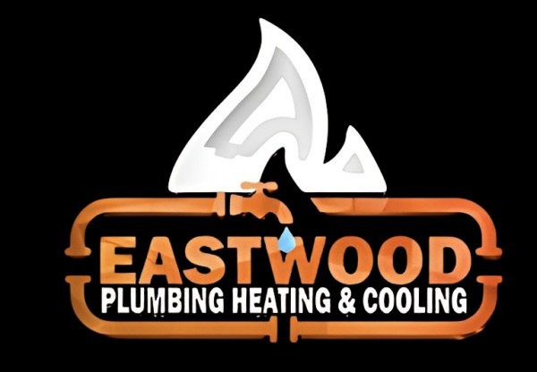
Keep your home comfortable and your systems running efficiently with Eastwood Plumbing Heating & Cooling LLC. Call us today for expert water heater installs, plumbing repairs, and HVAC service.
Tap to Call NowEastwood Plumbing Heating & Cooling LLC is a locally owned and operated plumbing, heating, and cooling company based in Gardner, Massachusetts. Founded in 2024 by Andrew Eastwood, the company brings over 9 years of hands-on trade experience to every job — from emergency water heater replacements to complete oil-to-gas heating conversions. We serve homeowners and businesses throughout Gardner, Fitchburg, Leominster, Westminster, Ashburnham, Templeton, Winchendon, Hubbardston, Athol, and the entire North Central Massachusetts region. No call centers. No corporate runaround. You call us, Andrew or a member of his team answers, and we show up ready to work.
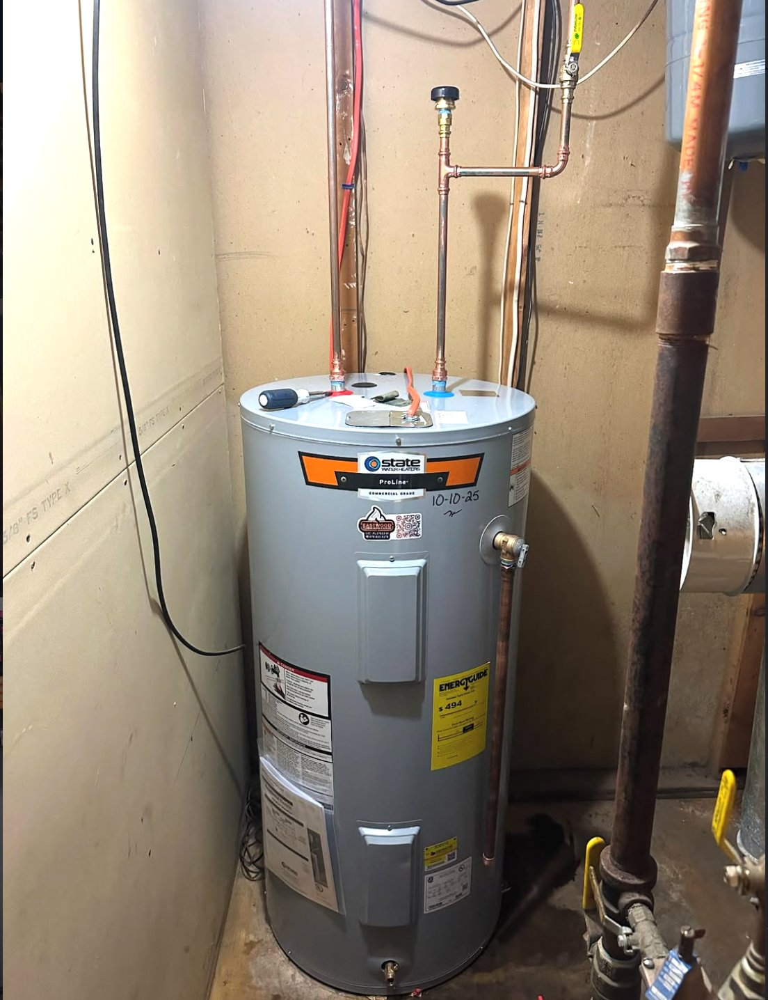
Gardner, Fitchburg, Leominster & all of North Central MA
Call NowGas, electric, and tankless water heater installation, repair, and emergency replacement. We carry top brands like State, Bradford White, and PurePro — and we often install the same day you call.
Oil, gas, and high-efficiency boiler and furnace repair, replacement, and annual maintenance. From cast iron steam boilers to modern condensing systems — we keep Gardner-area homes warm all winter.
Ductless mini split heat pump installation for year-round heating and cooling — without tearing into your walls. Ideal for older New England homes. We help with Mass Save rebates to cut your cost.
Professional drain clearing for kitchen sinks, bathroom drains, main sewer lines, and basement drains. We use mechanical equipment — not chemicals — to fix the problem for good.
Full-service oil to natural gas conversions including utility coordination, tank removal, new equipment installation, permitting, and inspections. One contractor, start to finish.
Rough-in plumbing, fixture installation, tub-to-shower conversions, and gas lines for kitchen and bathroom renovation projects. We work with your GC or handle the plumbing scope directly.
There are a lot of plumbers you could call. Most of them will put you on hold, send you to voicemail, or schedule you for sometime next week. Here's why families across North Central Massachusetts keep calling us back.
When your basement is flooding or your heat just died, you need someone who picks up — not a call center that takes a message. You call Eastwood, you get a real person who can help right now.
We quote the job before we start, and the number doesn't change when we're done. No diagnostic fees that turn into pressure sales. No inflated emergency markups. Just a fair price for quality work.
Massachusetts plumbing licenses PL17633-M and 5132-PL-C. Over 9 years of hands-on trade experience. Fully insured. We do the job right the first time and stand behind our work.
Not every problem needs a $5,000 solution. If a $200 repair buys you another 5 years, we'll tell you that. If it's time to replace, we'll explain why and give you options — not a hard sell.
Give us a call at 978-833-5178 and tell us what's going on. No phone trees, no hold music — just a real conversation about your problem.
We come out, look at the problem, and give you a clear price before we touch anything. No guesswork, no hidden fees, no surprises.
We do the work, clean up after ourselves, and make sure everything is running the way it should before we leave. If it's not right, we're not done.
Eastwood Plumbing Heating & Cooling is based in Gardner, MA and proudly serves homeowners and businesses throughout Worcester County and the surrounding region. If you're within about 20 miles of Gardner, we come to you.
Our home base. Whether you're on Pleasant Street, in the West Gardner neighborhood, or near Lake Wampanoag — we know the area, the housing stock, and the common plumbing and heating issues that come with it.
Just 15 minutes east on Route 2. We handle plumbing repairs, boiler replacements, and water heater installs throughout Fitchburg's older housing stock, including the Cleghorn, South Fitchburg, and downtown neighborhoods.
A short drive down Route 2. From water heater emergencies in North Leominster to kitchen remodels near the center of town, we serve the entire city.
Rural homes with well water, older heating systems, and seasonal properties — we understand the unique needs of Westminster homeowners.
From lakefront homes on Upper Naukeag to properties along Route 101, we provide plumbing and heating service throughout Ashburnham.
Including Baldwinville and East Templeton. Older homes, oil boilers, and properties that need a plumber who understands the area.
Right up Route 140. Whether it's a clogged main line or a full oil-to-gas conversion, we serve Winchendon and the surrounding area.
We also serve Hubbardston, Athol, Orange, Phillipston, Princeton, Sterling, and other communities in the North Central Massachusetts region. If you're not sure whether we cover your town, just call — the answer is probably yes.
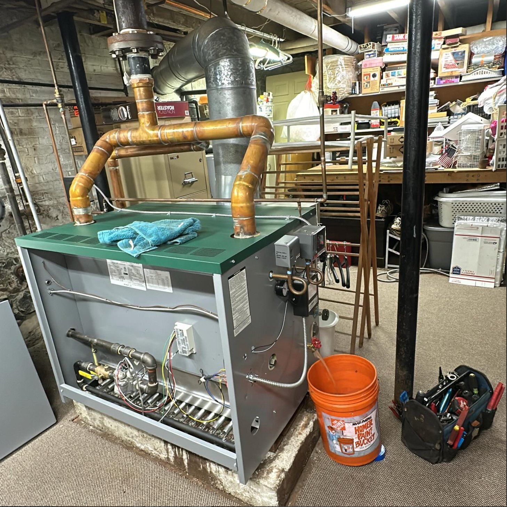
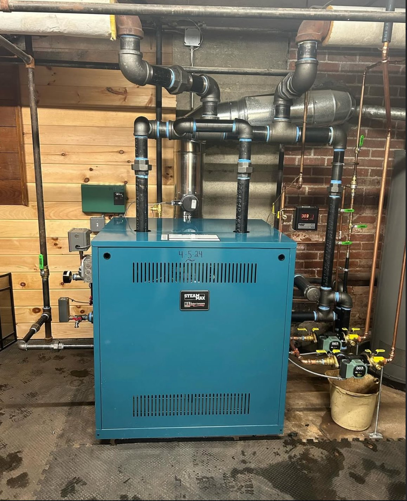
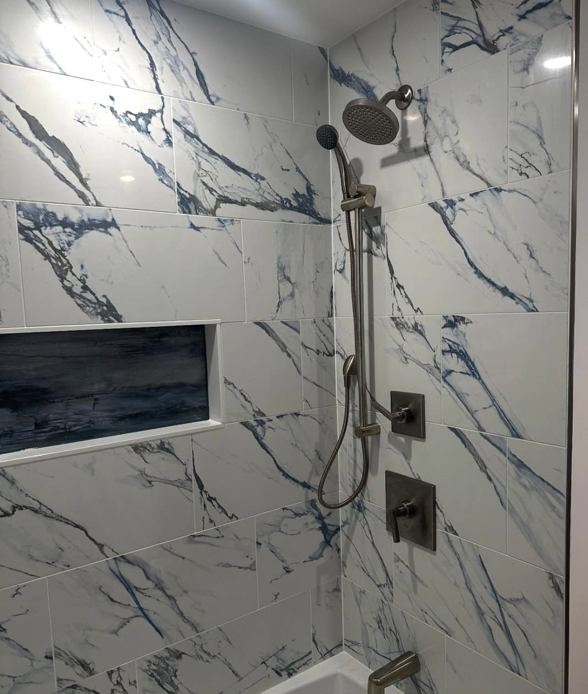
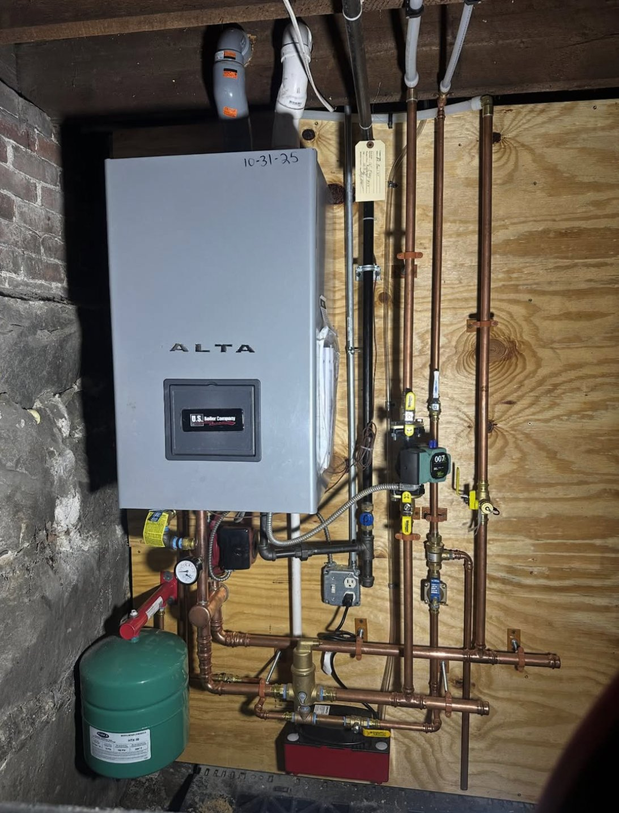
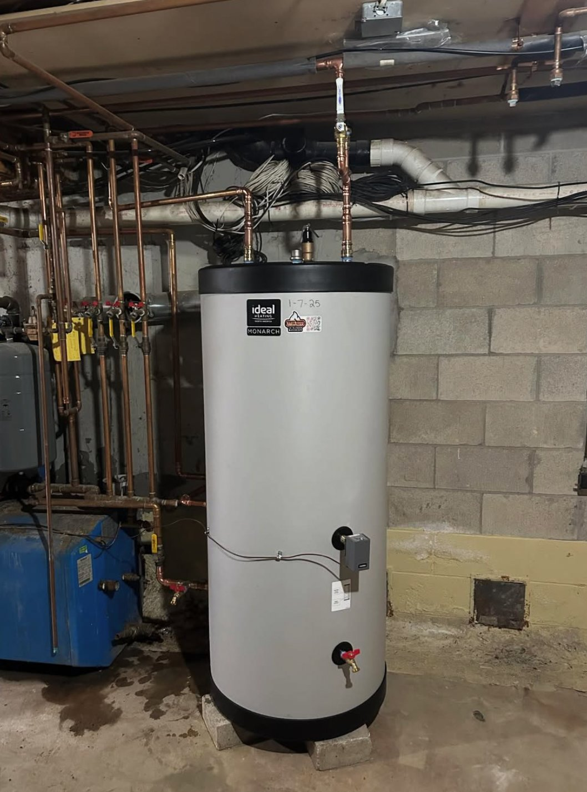
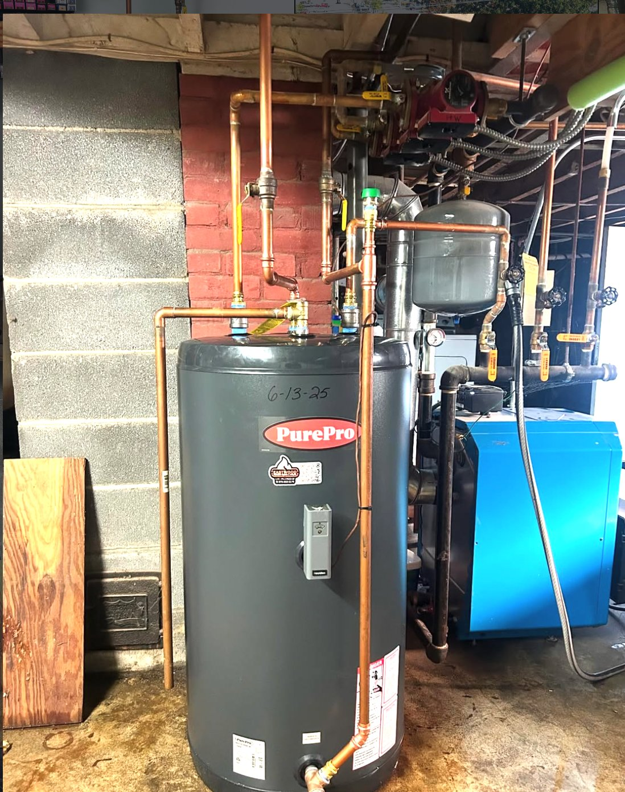
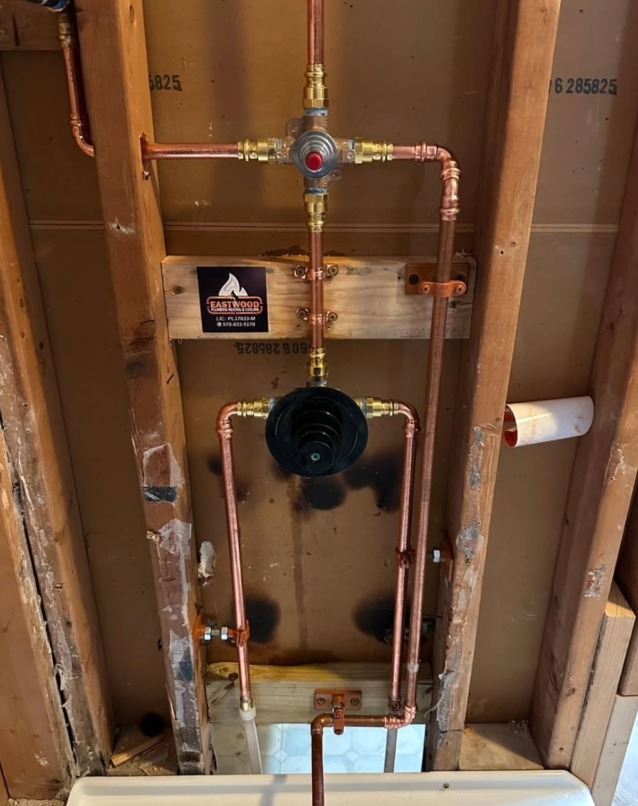
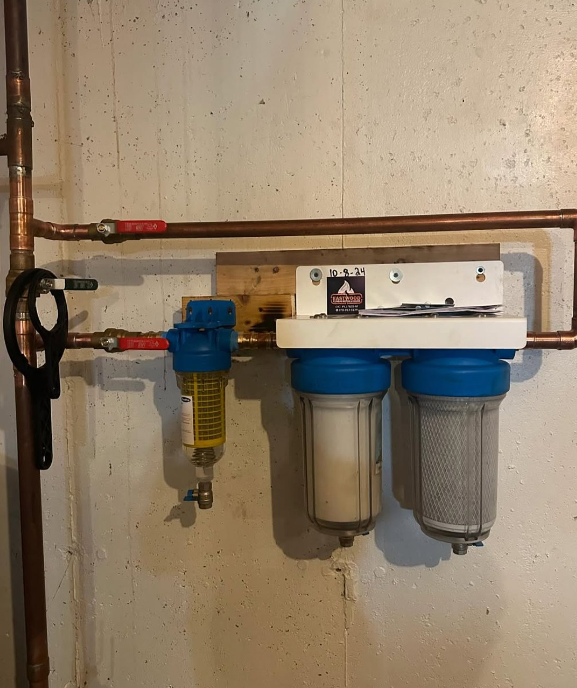
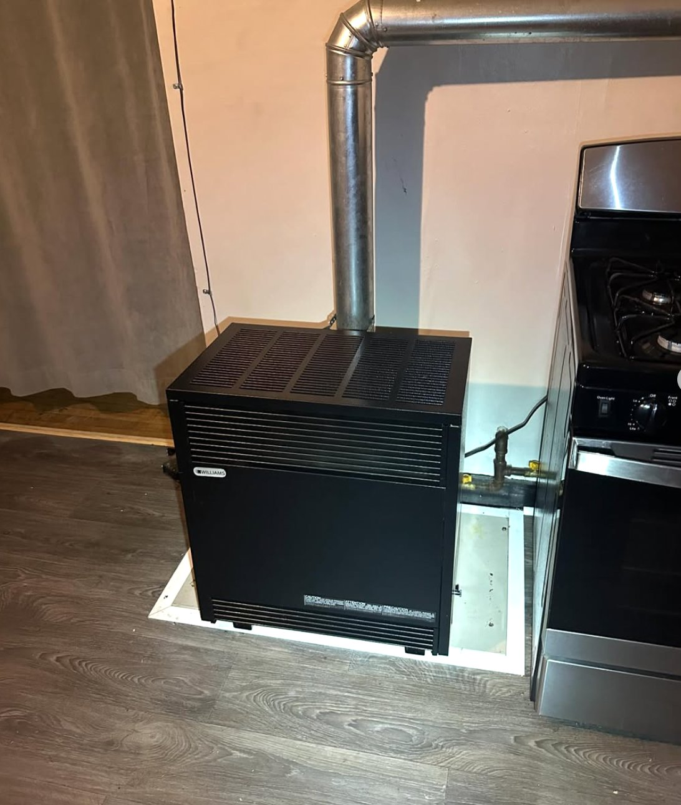
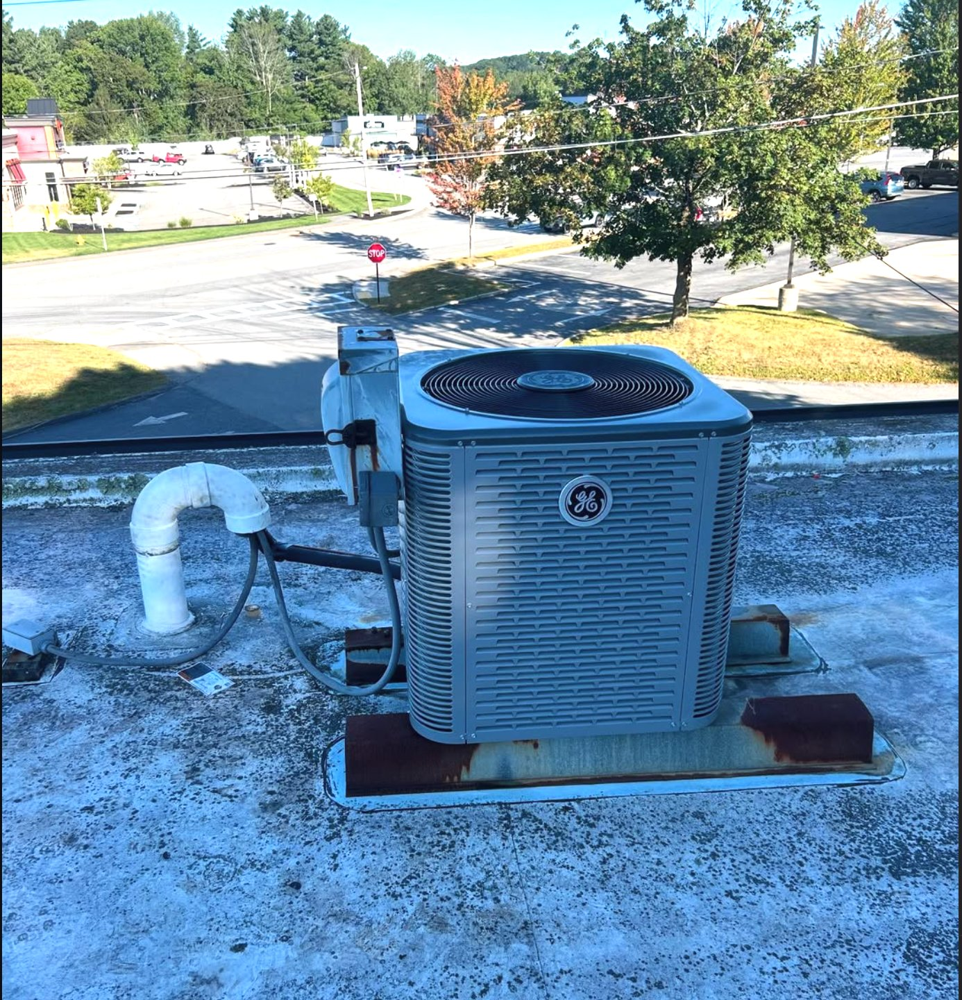
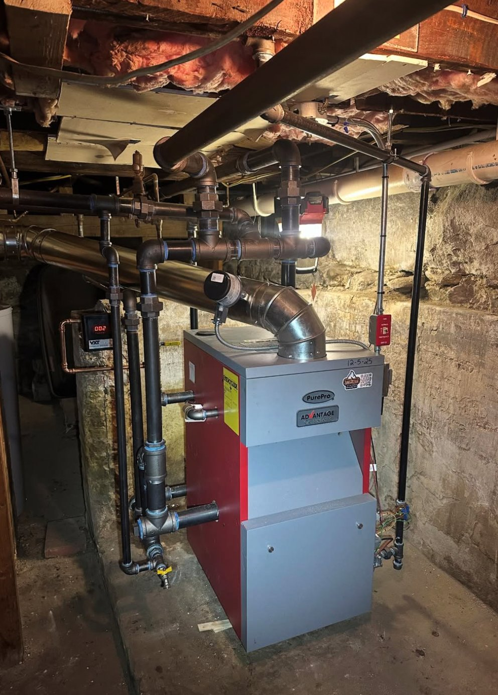
We had a pipe burst on our 2nd floor that ran down to our living room at 8pm. Had to turn off our water with the temperature reaching close to 0. Called at least a dozen "24/7" and "emergency" plumbers with most not responding at all and the rest not being able to come until days later or charging insane rates just to come out. Thankfully I saw Eastwood Plumbing on Google and gave them a call. They were at my house within a half hour of calling and got the job done quickly and efficiently. Even with the late hour they took the time to answer our questions and were extremely thorough. And on top of all of it they charged significantly less than we could have expected. We have found a plumber for life.
We lost our heat on the coldest day of the winter. When a large company I contacted on a Sunday could not help us I found this company. Andrew, the owner, came and helped us out. He is very knowledgeable and I would highly recommend this young man. We will contact him for all our plumbing and heating needs in the future.
Eastwood Plumbing is amazing! I called around 1pm and Andrew showed up by 2 with a brand new water heater for my grandmother. He didn't want her to go without hot water, so he made sure it was installed the same day and had everything done within an hour. Super friendly, professional, and he even fixed some poorly done piping from the last company just because he wanted it done right. Couldn't ask for better service.
I am very happy with Andrew and his assistant who arrived on time and did an excellent job of replacing my kitchen faucet, running a water line to my refrigerator and disconnecting my water line and drain to my bathroom sink so I could replace my outdated vanity with a new one. They left me with a clean and neat looking area in all spaces. I will call them back anytime I need additional plumbing services.
We provide water heater installation and repair (gas, electric, and tankless), boiler and furnace service, ductless mini split and HVAC installation, drain cleaning and clog removal, oil to gas heating conversions, and kitchen and bathroom remodeling plumbing. We handle everything from emergency repairs to planned installations for homes and businesses throughout North Central Massachusetts.
Yes. For emergencies like burst pipes, no heat, or no hot water, we offer same-day service throughout Gardner, Fitchburg, Leominster, Westminster, and the surrounding area. Call us at 978-833-5178 and we'll get to you as fast as possible — often within the hour.
We're based in Gardner, MA and serve all of North Central Massachusetts including Fitchburg, Leominster, Westminster, Ashburnham, Templeton, Winchendon, Hubbardston, Athol, Orange, Phillipston, Princeton, and Sterling. If you're within about 20 miles of Gardner, we come to you.
Yes. We hold Massachusetts plumbing licenses PL17633-M and 5132-PL-C and carry full liability insurance. We pull all required permits for plumbing and heating work and schedule inspections as part of the job.
It depends on the job. Drain cleaning typically runs $150 to $300. Water heater replacements range from $1,200 to $2,500. Boiler replacements and oil-to-gas conversions vary based on equipment and scope. We always provide a clear quote before starting work — no hidden fees, no surprises.
Yes, for larger projects like water heater replacements, boiler installs, mini split systems, oil-to-gas conversions, and remodeling work. Call us at 978-833-5178 to schedule a free estimate at your home.
We install and service equipment from all major manufacturers including State, Bradford White, Navien, Rinnai, Burnham, Weil-McLain, PurePro, Mitsubishi, and Fujitsu. We'll recommend the right equipment for your home and budget.
Yes. Many of the heating and cooling systems we install — especially ductless mini splits and high-efficiency boilers — qualify for Massachusetts Mass Save rebates that can save you thousands. We help you understand what you qualify for and handle the paperwork.
Licensed. Insured. Trusted by 60+ five-star customers across North Central MA.
978-833-5178